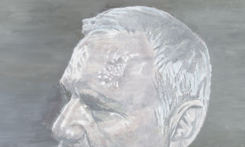
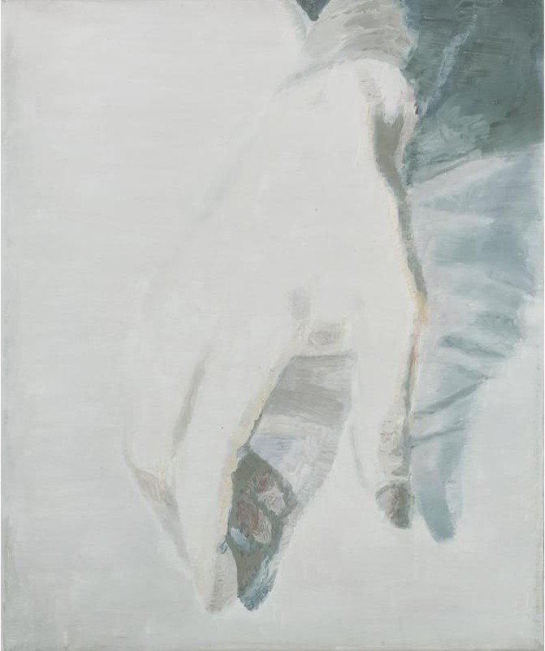
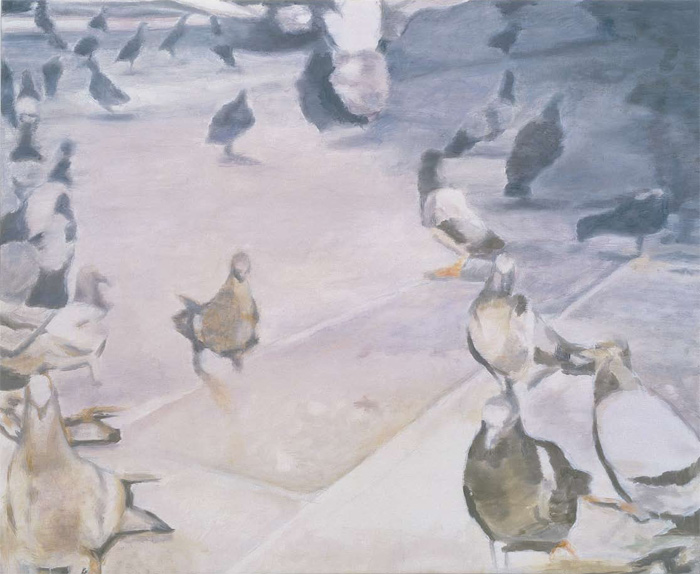
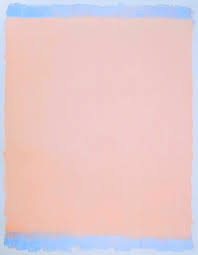

homehomehome0-0
Agnes Martin
Hernan Bas
Luc Tumans
Luc Tumans
Luc Tumans
Luc Tumans
캐나다 태생의 미국 화가
. 1960년대 이래 구체적인 인간 현실 너머의 초월적이고 정신적인 세계를 옅은 모노크롬과 격자무늬, 수평선으로 표현하였다.
그는 종종 미니멀리스트로 언급되기도 하지만 마틴은 스스로를 추상표현주의자라고 말한다.
1



title the visitor sees.
2
3

4